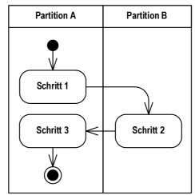

{% extends "../_base_template.html" %}
{% block title %}Lektion 7 - Ablaufplanung mit Aktivitätsdiagrammen{% endblock %}

{% block sections %}
<section data-markdown>
<textarea data-template>
<i class="fas fa-flask"></i> Besprechung Hausaufgabe State Machine
=============================

Beispiellösung Maskenablauf der Hausaufgabe
* Hat jeder State (Maske) mind. einen Ein- UND Ausgang? (Keine "Dead Ends")
* Hat jeder Ausgang eine Event-Beschreibung? (Keine eventlosen Übergänge)


</textarea>
</section>

<section data-markdown class="bigger-2">
<textarea data-template>
<i class="fas fa-graduation-cap"></i> OOD - Abläufe mit Aktivitätsdiagrammen modellieren
=============================

Heutiges Ziel
-------------

* Sie wissen, was ein Aktivitätsdiagramm ist und wo man es einsetzt
* Sie können eigene Aktivitätsdiagramme für Ihr Software-Design entwickeln

### Hausaufgaben

* UML Aktivitätsdiagramm entwerfen

</textarea>
</section>

<section>
    <section data-markdown data-separator-notes="^Note:" class="bigger-2">
    <textarea data-template>
    <i class="fas fa-graduation-cap"></i> Abläufe planen mit Aktivitätsdiagrammen
    ===========

    * Das **Aktivitätsdiagramm** beschreibt die Ausführung / Ablauf von Funktionalität / Verhalten. Es gehört zum dynamischen Modell
    * Es eignet sich sehr gut, um komplexe Use-Cases resp. Abläufe zu präzisieren. Es stellt einen komplexen Ablauf / Aktivität als grafisches **„Flussdiagramm“** dar.
    * Es besteht aus einem **Kontrollfuss** (Ablauf) und einem **Datenmodell** (Datenaustausch zwischen den Aktionen / Funktionen)
    * Ein- und Ausgabeobjekte sind optional, es können auch Start- und Endknoten verwendet werden.

    
    </textarea>
    </section>

    <section data-markdown data-separator-notes="^Note:" class="bigger-2">
    <textarea data-template>
    <i class="fas fa-graduation-cap"></i> Abläufe planen mit Aktivitätsdiagrammen
    ===========

    * Durch Verzweigungen entstehen mehrere **Szenarien**: Jeder Weg durch das Diagramm stellt **ein Szenario** dar. Wir betrachten
      Szenarien später bei den Sequenzdiagrammen.

      
    * Benutzen Sie **"Swim Lanes"** (horizontale/vertikale Gruppierungen), um die Aktivitäten den verantwortlichen Modulen zuzuordnen.

      
    </textarea>
    </section>
</section>

<section data-markdown data-separator-notes="^Note:" class="bigger-2">
<textarea data-template>
<i class="fas fa-wrench"></i> Aktivitätsdiagramm entwickeln: VisualParadigm
===========

Kurze Einführung in Aktivitätsdiagramme mit VisualParadigm: Wir schauen uns die wichtigsten Funktionen im UML-Tool an:

* Erstellen eines Aktivitätsdiagrammes
* Aktivitätsrahmen
* Actions/Schritte
* Start/Endknoten
* Verzweigungen / Zusammenführungen
* Swim Lanes

</textarea>
</section>

<section data-markdown data-separator-notes="^Note:">
<textarea data-template>
<i class="fas fa-wrench"></i> Aktivitätsdiagramm entwickeln
===========

Aktivitätsdiagramme sind wichtig, um komplexe Programmabläufe zu planen / zu dokumentieren.

**Aufgabe:**

Entwickeln Sie ein Aktivitätsdiagramm für folgenden Use Case:

**Medien an Scanner-Terminal ausleihen**

Der Benutzer scannt diverse Medien am Scanner-Terminal. Entwerfen Sie einen **Detaillierten Programmablauf** als Aktivitäts-Diagramm.

 * überlegen Sie sich die notwendigen (technischen, programmatischen) Schritte von der Authentifizierung bis zur Abmeldung am Terminal
 * Teilen Sie die Schritte in folgende "Swim Lanes" ein: **"Frontend/Presentation", "Business-Logik", "Persistent/Speicherung"**
 * überlegen Sie sich die verschiedenen Szenarien (Verzweigungen), die auftreten können (z.B. User unbekannt etc.)
 * Nehmen Sie dazu die **Anforderung des Bibliothekssystems** und die Use Cases zur Hilfe: Diese definieren die geforderte Funktionalität.
 * Nehmen Sie die [ **"Checkliste 006 Aktivitätsdiagramme"** ](https://moodle.bztf.ch/pluginfile.php/26810/mod_folder/content/0/Checkliste_006_Aktivita%CC%88tsdiagramm.pdf?forcedownload=1) zur Hilfe: Sie zeigt Ihnen, auf welche Kriterien Sie achten müssen.
 * Prüfen Sie die **Qualität Ihres Aktivitätsdiagrammes** anhand der "analaytischen Schritte" in der Checkliste.

Am Ende der Stunde (ca. 15min vor Schluss) schauen wir Ihren Stand an.

**Hausaufgabe**

Stellen Sie das Aktivitätsdiagramm fertig. Einreichen via Moodle.
</textarea>
</section>

{% endblock %}
